操作系统：期末复习
Last updated on December 23, 2025 pm
本文为 SJTU-CS3601 操作系统课程的期末复习，主要复习内容为操作系统概述、内存管理、进程管理、文件管理。
Lecture 1: 操作系统的演化
- 操作系统的功能：
- 从硬件角度：管理硬件、对硬件进行抽象
- 从应用角度：服务应用、管理应用
操作系统内核架构
-
宏内核：内核所有模块运行在内核态，具备直接操作硬件的能力
- 优点：
- 拥有丰富的沉淀和积累
- 内核各模块间可以相互调用，性能高
- 缺点：
- 安全性与可靠性问题：模块之间没有很强的隔离机制
- 实时性支持：系统太复杂导致无法做最坏情况时延分析
- 系统过于庞大而阻碍创新
- 向上向下的扩展：很难去剪裁/扩展一个宏内核系统支持从 KB 级别到 TB 级别的场景
- 硬件异构性：很难长期支持一些定制化的方式去解决一些特定问题
- 功能安全：无法通过汽车安全完整性认证
- 信息安全：单点错误会导致整个系统出错
- 确定性时延：目前依然不确定是否能支持确定性时延
- 优点：
-
微内核：
- 设计原则：最小化内核功能
- 将内核功能拆分到用户态，成为独立的“服务”
- 内核仅保留极少功能，为这些服务提供通信
- 优点：
- 易于扩展：直接添加一个用户进程即可为操作系统增加服务
- 易于移植：大部分模块与底层硬件无关
- 更加可靠：在内核模式运行的代码量大大减少
- 更加安全：即使存在漏洞，服务与服务之间存在进程粒度隔离
- 更加健壮：单个模块出现问题不会影响到系统整体
- 缺点：
- 性能较差：内核中的模块交互由函数调用变成了进程间通信
- 生态欠缺：尚未形成像 Linux 一样具有广泛开发者的社区
- 重用问题：重用宏内核操作系统提供兼容性，带来新问题
- 设计原则：最小化内核功能
-
外核：不提供硬件抽象；不管理资源，只管理应用
- 应当由应用来尽可能地控制对硬件资源的抽象
- 将对硬件的抽象以库（LibOS）的形式提供，不同应用可使用不同的 LibOS
- 优点：
- OS 无抽象，能在理论上提供最优性能
- 应用对计算有更精确的实时等控制
- LibOS 在用户态更易调试，调试周期更短
- 缺点：
- 对计算资源的利用效率主要由应用决定
- 定制化过多，导致维护难度增加
-
多内核：通过多内核来管理异构多核设备
- 思路：
- 默认的状态是划分而不是共享
- 维持多份状态的 copy 而不是共享一份状态
- 显式的核间通信机制
- 设计：
- 在每个 core 上运行一个小内核
- OS 整体是一个分布式系统
- 应用程序依然运行在 OS 之上
- 思路：
Lecture 2: ARM 汇编基础
- 寄存器：
x1-x30是 31 个 64 位寄存器，w0-w30是其低位的 31 个 32 位寄存器
基础指令
- 寄存器之间的数据搬移：
mov dst, srcsrc：立即数或寄存器dst：寄存器
- 算术指令：
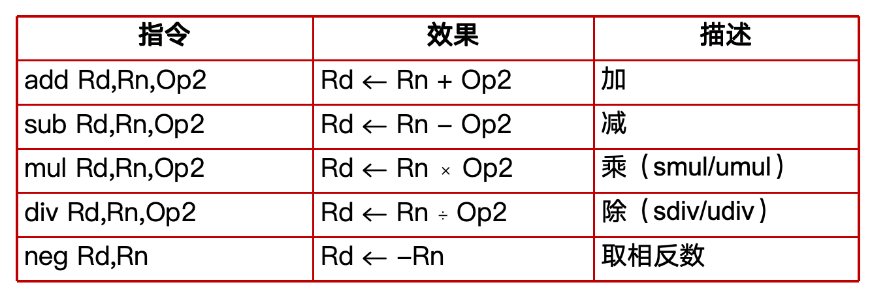
- 移位指令：

- 逻辑运算指令：

-
修改过的寄存器：对操作数进行移位或位扩展
- 无符号扩展：uxtb, uxth, uxtw (Zero-extend single-word / half-word / byte)
- 符号扩展：sxtb, sxth, sxtw (Sign-extend single-word / half-word / byte)
-
访存指令：
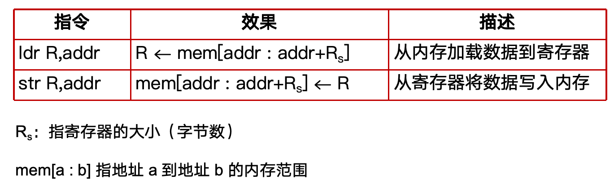
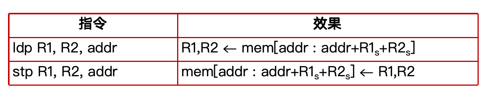
- 寻址模式：
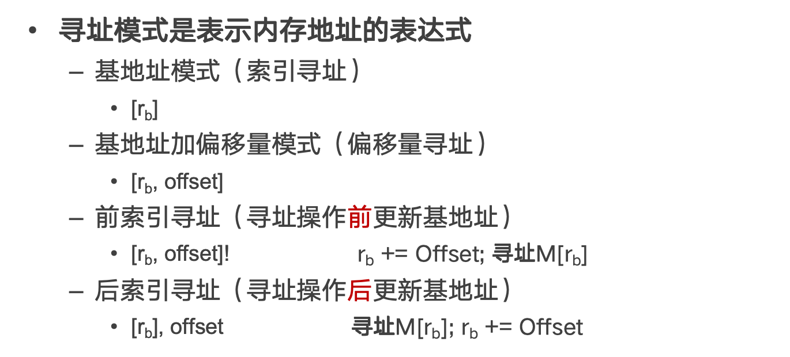

分支指令
-
条件码：包含 N（Negative）、Z（Zero）、C（Carry）、V（Overflow）
- 设置：
- 带有 s 后缀的算术或逻辑运算指令（如
subs、adds） - 比较指令：
cmp(操作数之差)、cmn(操作数之和)、tst(操作数相与)cmp src1, src2：计算src1 - src2
- 带有 s 后缀的算术或逻辑运算指令（如
- 设置：
-
跳转条件：
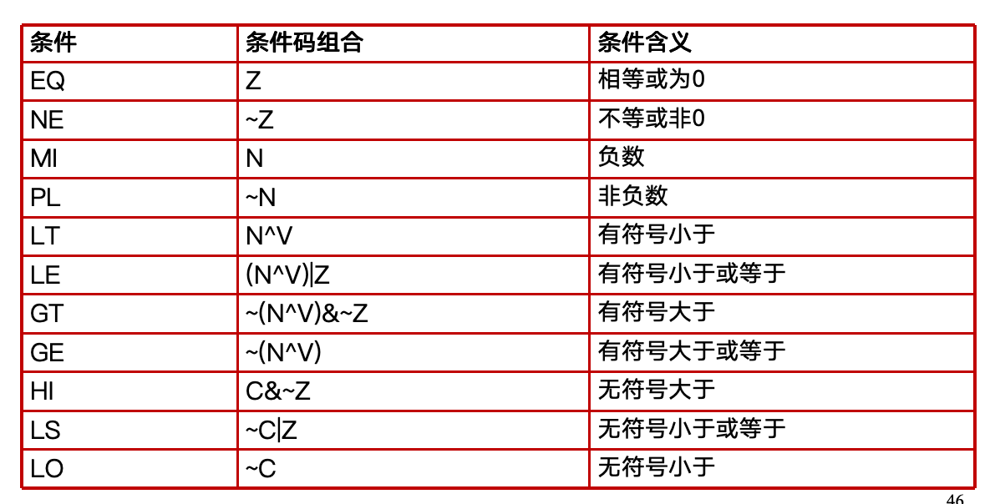
-
跳转指令：
- 直接分支指令：以标签对应的地址作为跳转目标
- 无条件分支指令：
b \<label> - 有条件分支指令：
bcond \<label>，如beq、bne、ble
- 无条件分支指令：
- 间接分支指令：以寄存器中的地址作为跳转目标
br reg，如br x0
- 直接分支指令：以标签对应的地址作为跳转目标
-
for 循环翻译实例：

- while 循环翻译方法及实例：

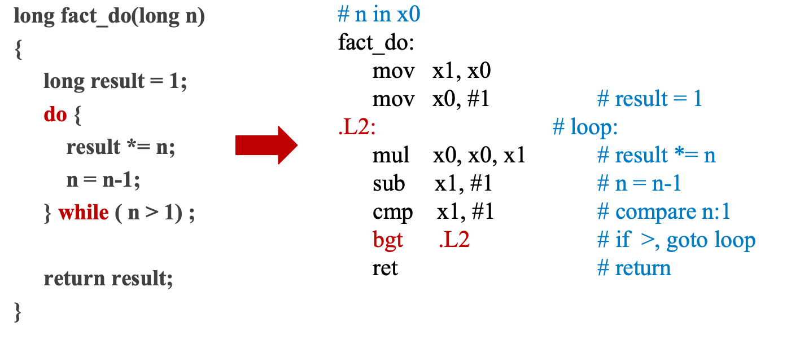
函数调用
- 函数调用指令：
bl label(直接调用，调用函数)blr Rn(间接调用，调用函数指针)- 功能：将返回地址存储在链接寄存器 LR (即
x30寄存器)，并跳转到被调用者的入口地址
- 函数返回指令：
ret(不区分直接调用与间接调用)- 功能：跳转到链接寄存器 LR 中的返回地址
- SP（Stack Pointer）寄存器：栈指针，指向栈顶（低地址）
- FP (Frame Pointer) 寄存器：帧指针，即
x29寄存器 - 标准的函数首尾操作：
1 | |
- 参数传递：
- 调用者使用
x0-x7寄存器传递前 8 个参数 - 第 8 个之后的参数，按声明顺序从右到左压到栈上，被调用者通过 SP + 偏移量访问
- 被调用者使用
x0寄存器传递返回值
- 调用者使用
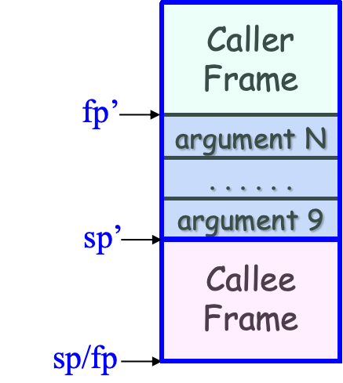
- 寄存器保存：
- 调用者保存：
x9-x15- 调用者：在调用前按需进行保存，在返回后进行恢复
- 被调用者：可以随意使用
- 被调用者保存：
x19-x28- 被调用者：在使用前进行保存，在返回前进行恢复
- 调用者：这些寄存器的值在函数调用前后不会改变
- 调用者保存：
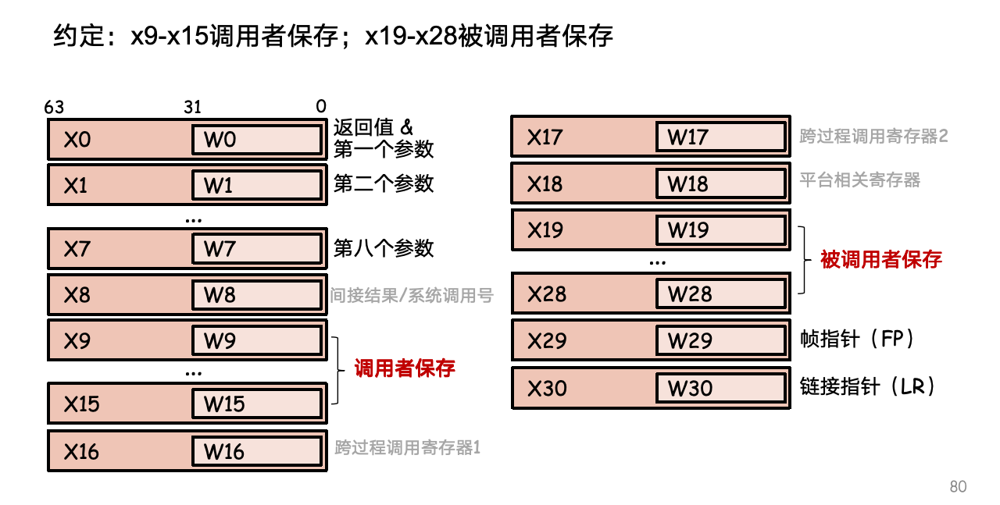
- 函数调用实例：
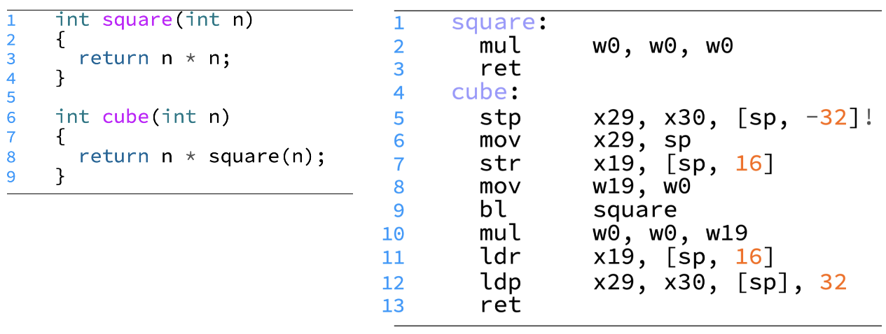
Lecture 3: ARM 汇编 - 系统 ISA
- 常见寄存器：
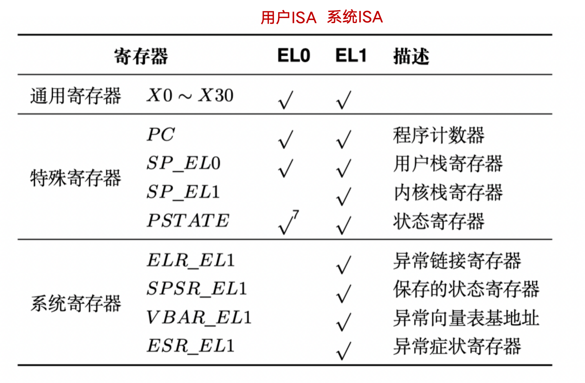
-
系统指令：
mrs/msr：从系统寄存器读取值/向系统寄存器写入值svc/eret：特权级切换和返回
-
特权级切换的时机：
- 同步异常：执行当前指令触发异常
- 第一类：用户程序主动发起系统调用（
svc指令） - 第二类：非主动，如用户程序意外访问空指针
- 第一类：用户程序主动发起系统调用（
- 异步异常：CPU 收到中断信号
- 从外设发来的中断，如屏幕点击、鼠标、收到网络包
- CPU 时钟中断，如定时器超时
- 同步异常：执行当前指令触发异常
特权级切换过程
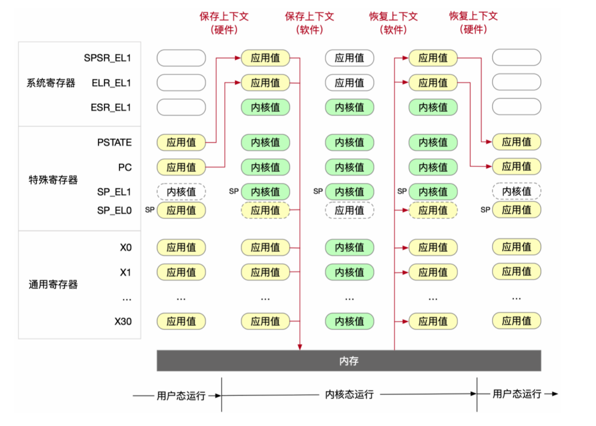
-
处理器在切换过程中的任务：
- 将发生异常事件的指令地址保存在 ELR_EL1 中
- 将异常事件的原因保存在 ESR_EL1
- 将处理器的当前状态（即 PSTATE）保存在 SPSR_EL1
- 栈寄存器不再使用 SP_EL0（用户态栈寄存器），开始使用 SP_EL1
- 修改 PSTATE 寄存器中的特权级标志位，设置为内核态
- 找到异常处理函数的入口地址，并将该地址写入 PC，开始运行操作系统
-
操作系统在切换过程中的任务：将属于应用程序的 CPU 状态保存到内存中，用于之后恢复应用程序继续运行，包括：
- 通用寄存器
x0-x30 - 特殊寄存器，主要包括 PC、SP 和 PSTATE
- 系统寄存器，包括页表基地址寄存器等
- 通用寄存器
-
硬件操作的必要性：
- PC 寄存器的值必须由处理器保存：否则当操作系统开始执行时，PC 将被覆盖
- 栈的切换必须由硬件完成：否则操作系统有可能使用用户态的栈，导致安全问题
系统调用的优化
- vDSO：内核将一部分数据通过只读的形式共享给应用，允许应用直接读取
- Flex-SC：允许应用以“向某一块内存页写入请求”的方式发起系统调用，并通过轮询来等待系统调用完成
- 内核独占一个 CPU 核心，通过轮询来等待用户的请求，然后执行系统调用，并将返回值写入同一块内存页
- 如果只有一个核心，可以将轮询改成批处理，即应用程序一次发起多个系统调用请求，内核一次性将所有系统调用处理完
Lecture 4: 从应用视角看操作系统抽象
- 处理器上下文：
- 通用寄存器：所有（X0-X30）
- 特殊寄存器：SP_EL0 (栈寄存器)
- 系统寄存器：ELR_EL1（对应 PC）, SPSR_EL1（对应 PSTATE）
常见的进程接口
-
exit()：终止进程并带上一个 status 状态- 返回值：无返回值
- 语法：
void exit(int status);
-
fork()：父进程创建新的子进程，调用一次返回两次- 返回值：子进程为 0，父进程为子进程 PID
- 语法：
pid_t fork(void);
1 | |
-
execve()：加载和运行- 只调用一次，且永远不会返回（仅仅在运行报错的时候，返回调用程序）
- 语法：
int execve(const char *filename, const char *argv[], const char *envp[]);
-
waitpid()：等待子进程终止后，内核回收子进程- 返回值：成功返回子进程 PID，出错返回 -1
- 语法：
pid_t waitpid(pid_t pid, int *status, int options);- pid>0 ：等待集合中只有
pid子进程 - pid=-1：等待集合包括所有子进程
- options=0
- 挂起调用进程，等待集合中任意子进程终止
- 如果等待集合中有子进程在函数调用前已经终止，立刻返回
- 返回值是导致函数返回的终止子进程 pid
- 该终止子进程被内核回收
- status 指针带回被回收子线程的 exit 状态
- pid>0 ：等待集合中只有
-
进程的终止：进程终止后，内核不会立刻销毁该进程，而是以终止态存在，等待父进程回收
- 僵尸进程：终止状态下还未被回收的进程
- 如果父进程在自己终止前没有回收僵尸子进程，内核会安排 init 进程回收这些子进程
- 僵尸进程：终止状态下还未被回收的进程
ELF 文件格式
- ELF 格式：可执行可链接格式
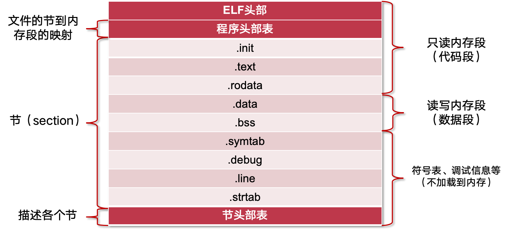
- ELF 头部：通常用于存元数据
- 节头部表：每一个节都有一个节头部（节头部表的一项）描述
- ELF 字符串表（.strtab）：记录一系列 C 风格字符串，表示符号名或节名
- 用以调试的节：
- .debug：调试符号表，包括变量、typedef、C 源文件
- .line：C 源文件的行数与 .text 节中指令的映射
- 代码和数据节：
- .text：代码
- .rodata：只读数据，包括不可修改的常量数据
char *str = "apple"中的"apple"存放在.rodata段char str2[] = "apple"中的"apple"存放在栈上
- .data：初始化的全局变量和静态变量
- .bss：未初始化的全局变量和静态变量（不占文件空间，运行时分配内存）
Lecture 5: 内存地址翻译’
Lecture 6: 系统初始化
Lecture 7: 操作系统管理页表映射
Lecture 8: 物理内存管理
Lecture 9: 进程
- 进程控制块（PCB）：用于表示进程，存储在内核态
- 保存的信息包括：虚拟地址空间、处理器上下文、内核栈
- 进程标识符 PID、退出状态、子进程列表、执行状态
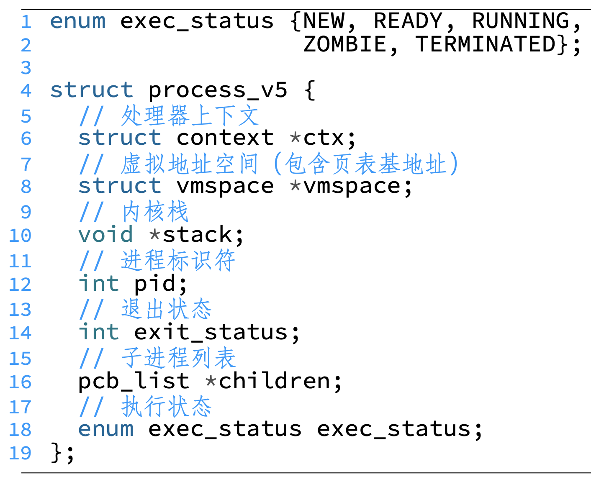
- 进程的退出与等待：
- 进程的退出：进程退出时，其上下文结构和虚拟地址空间会被销毁，但 PCB 和内核栈保留（处于僵尸状态）
- 进程的等待：父进程会等待子进程退出，记录子进程的退出状态，回收 PCB 并销毁内核栈
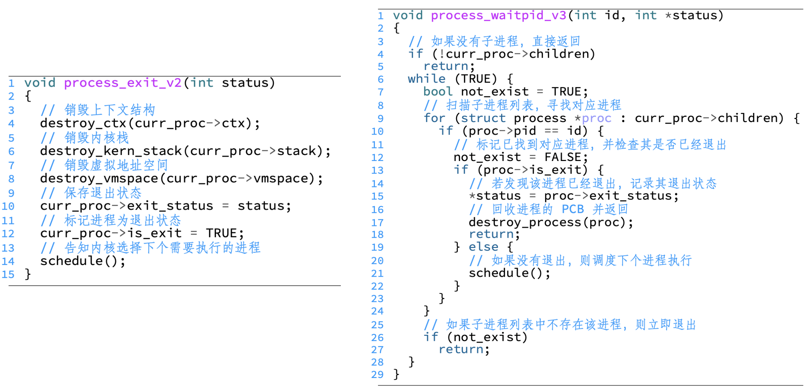
- 进程的五种典型执行状态：
- 新生（new）：刚调用
process_create - 就绪（ready）：随时准备执行（但暂时没有执行）
- 运行（running）：正在执行
- 僵尸（zombie）：退出但未回收
- 终止（terminated）：退出且被回收
- 新生（new）：刚调用

进程的创建
进程创建的过程

-
一、PCB 相关初始化：PCB 及其包含的内容都需要创建及初始化
- 分配 PCB 本身的数据结构
- 初始化 PCB：虚拟内存
- 创建及初始化 vmspace 数据结构
- 分配一个物理页，作为顶级页表
- 内核栈：分配物理页，作为进程内核栈
-
二、可执行文件加载：可执行文件通常有固定的存储格式，以 ELF 为例
- 从程序头部表可以获取需要的段所在位置
- 通常只有代码段和数据段需要被加载（loadable）
- 加载即从 ELF 文件中映射到虚拟地址空间的过程
-
三、准备运行环境：在返回用户态运行前，还需为进程准备运行所需的环境
- 分配用户栈：分配物理内存并映射到虚拟地址空间
- 准备程序运行时的环境：将参数和环境变量放到栈上
-
四、处理器上下文初始化：最后才初始化处理器上下文，因为其包含的内容直到前序操作完成才确定
- SP：设置为用户栈的栈顶地址（用户栈分配后才确定地址）
- PC：设置 ELR_EL1 寄存器（加载 ELF 才知道程序入口地址）
- PSTATE：设置 SPSR_EL1 寄存器
- 大部分寄存器初始值可直接赋为 0
Linux 的进程创建
-
fork()：- 实现：将父进程的 PCB 拷贝一份，包括虚拟内存、内核栈、处理器上下文等
- 优点：
- 接口非常简洁，（过去）实现简单
- 将进程创建和执行（
exec）解耦，提高了灵活度
- 缺点：
- 创建拷贝的复杂度与 PCB 复杂度相关，如今越来越复杂
- 完全拷贝过于粗暴（不如
clone） - 性能差、可扩展性差（不如
vfork和spawn） - 不可组合性 (如
fork()+pthread())
-
fork的替代接口：vfork：类似于fork，但让父子进程共享同一地址空间- 优点：连映射都不需要拷贝，性能更好
- 缺点：只能用在“
fork+exec”的场景中；共享地址空间存在安全问题
posix_spawn: 相当于fork+exec- 优点：可扩展性、性能较好
- 缺点：不如
fork灵活
clone:fork的进阶版，可以选择性地不拷贝内存- 优点：高度可控，可依照需求调整
- 缺点：接口比
fork复杂，选择性拷贝容易出错
进程切换
-
一、p0 进入内核态：由硬件完成部分寄存器保存
- PC 和 PSTATE 分别自动保存到 ELR_EL1 和 SPSR_EL1
-
二、p0 处理器上下文保存：将处理器中的寄存器值保存到处理器上下文对应的位置
-
三、由 p0 切换到 p1：
- 1. 虚拟地址空间切换：设置页表相关寄存器（TTBR0_EL1）
- 使用 PCB 中保存的页表基地址赋值给 TTBR0_EL1
- 2. 内核栈切换：设置内核中的栈寄存器 SP_EL1
- 使用 PCB 中保存的内核栈顶地址赋值给 SP_EL1
- 3. 进程上下文切换：设置
cur_proc为之后要执行的进程（p1）- 表明之后操作系统将以 p1 的身份运行
- 1. 虚拟地址空间切换：设置页表相关寄存器（TTBR0_EL1）
-
四、p1 处理器上下文恢复：从处理器上下文中加载各寄存器的值，放入对应寄存器中
-
五、p1 回到用户态：由硬件自动恢复部分寄存器
- 将 ELR_EL1 和 SPSR_EL1 中的值自动保存到 PC 和 PSTATE 中
Lecture 10: 线程
-
进程的问题：
- 创建进程的开销较大：包括了数据、代码、堆、栈等
- 进程的隔离性过强：进程间交互可以通过进程间通信（IPC），但开销较大
- 进程内部无法支持并行：单一进程无法充分利用多核资源
-
线程：更加轻量级的运行时抽象
- 只包含运行时的状态（主要是寄存器和栈），静态部分由进程提供
- 一个进程的多个线程可以在不同处理器上同时执行
- 调度和切换的基本单元由进程变成了线程
- 线程有自己的栈及内核栈，但数据、代码、堆等其他区域共享
-
线程的优势：
- 降低管理开销：从属于进程，创建和销毁时不涉及进程的所有内容
- 数据共享和同步方便：共享同一地址空间，可以直接读写彼此的数据，无需使用耗时的 IPC 机制
线程的基本操作
- 线程的创建：
pthread_create(&tid, attr, start_routine, arg)- 参数说明：
tid：返回子线程 IDattr：子线程属性，一般是NULLstart_routine：子线程起始执行点arg：子线程参数，即传入起始执行点函数的参数
- 作用：
- 内核态：创建相应的内核态线程及内核态
- 应用态：创建 TCB、应用栈和 TLS
- 主线程创建子线程后，两线程独立执行
- 参数说明：
- 线程的合并：
pthread_join(tid, &status)，等待tid对应线程执行完成，并获取其执行结果- 主线程需要手动调用来回收资源，否则可能出现资源溢出
- 线程的分离：
pthread_detach(tid)，使tid对应线程进入分离状态- 分离线程不能被其他线程杀死或回收，退出时资源自动回收
- 但是，分离线程并不完全独立，主线程调用
exit()仍会强制终止所有线程
- 线程的退出：
pthread_exit(status)，只退出当前线程（参数为返回值）- 使用
exit()会终结当前线程及所有子线程
- 使用
线程的实现
线程控制块 (TCB)
- TCB 保存的信息：处理器上下文、所属进程、内核栈、退出/执行状态
- PCB 保存的信息：虚拟地址空间、PID、子进程列表、包含的线程列表及总数
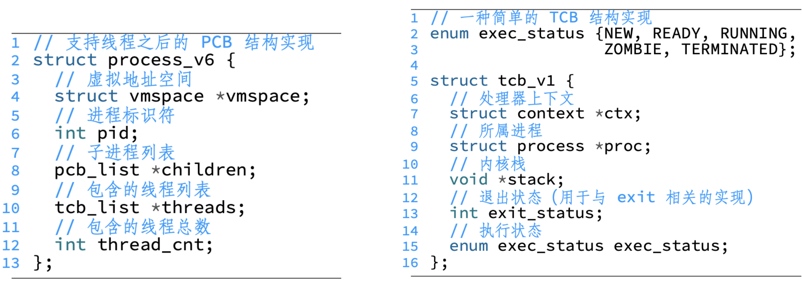
线程创建
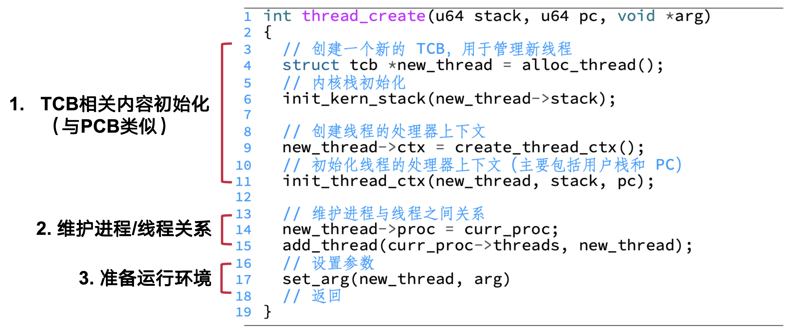
线程退出与合并
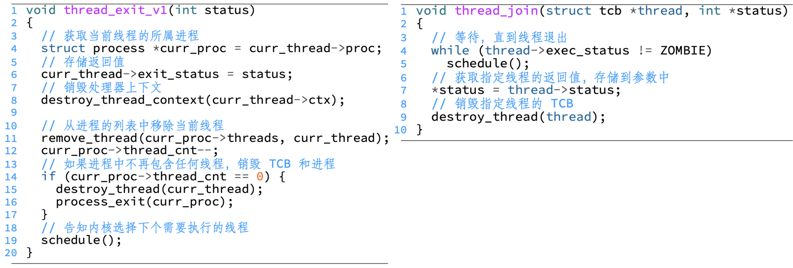
线程模型
-
线程的分类：
- 内核态线程：由内核创建并直接管理，内核维护其 TCB
- 内核态线程是内核进行调度的单位
- 用户态线程：由用户态的线程库创建并管理，对应的数据结构保存在用户态
- 内核不知晓该线程的存在，也不对其进行管理
- 内核态线程：由内核创建并直接管理，内核维护其 TCB
-
线程模型：表示了用户态线程与内核态线程之间的联系
- 多对一模型：多个用户态线程对应一个内核态线程
- 优点：内核管理简单
- 缺点：可扩展性差，无法适应多核机器的发展
- 在主流操作系统中被弃用，用于各种用户态线程库中
- 一对一模型：一个用户态线程对应一个内核态线程
- 优点：解决了多对一模型中的可扩展性问题
- 缺点：内核线程数量大，开销大
- 主流操作系统都采用一对一模型
- 多对多模型：多个用户态线程对应多个内核态线程
- 优点：解决了可扩展性问题（多对一）和线程过多问题（一对一）
- 缺点：管理更为复杂
- 在虚拟化中得到了广泛应用
- 多对一模型：多个用户态线程对应一个内核态线程
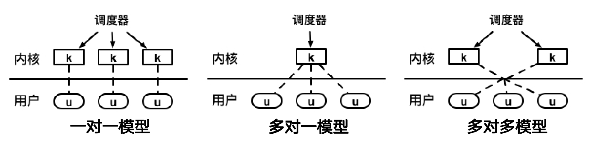
Lecture 11: 处理器调度
- 共用的调度指标：高资源利用率、多任务公平性、低调度开销
- 降低周转时间：任务第一次进入系统到执行结束的时间
- 降低响应时间：任务第一次进入系统到第一次给用户输出的时间
- 实时性：在任务的截止时间内完成任务
- 公平性：每个任务都应该有机会执行，不能饿死
- 开销低：调度器是为了优化系统，而非制造性能 BUG
- 可扩展：随着任务数量增加，仍能正常工作
经典调度策略 (Classical Scheduling)
1. 先到先得（First Come First Served, FCFS）
- 规则：按作业或进程到达的先后顺序进行服务
- 优点：
- 设计实现简单
- 对所有任务公平
- 问题：平均周转、响应时间过长
- 长短任务混合场景下，对短任务不友好
- 对 I/O 密集型任务不友好
2. 最短任务优先（Shortest Job First, SJF）
- 规则：运行时间最短的作业或进程优先得到服务
- 优点：平均周转时间短
- 问题：平均响应时间过长
- 对长任务不公平，可能饿死
- 必须预知任务执行时间
- 性能表现严重依赖任务到达时间点
3. 时间片轮转 (Round Robin, RR)
- 规则：
- 按照各进程到达就绪队列的顺序，轮流让各个进程执行一个时间片
- 若进程未在一个时间片内执行完，则剥夺 CPU，将进程重新放到就绪队列队尾重新排队
- 优点：
- 平均响应时间短
- 对所有任务公平
- 问题：
- 任务运行时间相似的场景下，平均周转时间长
- 时间片过短会导致调度开销过大
优先级调度策略 (Priority Scheduling)
4. 多级队列 (Multi-Level Queue, MLQ)
- 规则：
- 维护多个队列，每个对应静态设置好的优先级
- 高优先级的任务优先执行（高优先级空时，低优先级进程才能被调度）
- 同优先级内使用 Round Robin 调度（也可使用其他调度策略）
- 高优先级任务：
- I/O 密集型任务：为了更高的资源利用率
- 用户主动设置的重要任务
- 时延要求极高（必须在短时间内完成）的任务
- 优先级的动态调整：工作场景是动态变化的
- 静态设置的优先级可能导致：资源利用率低（优先级反转）、低优先级任务饥饿
5. 多级反馈队列 (Multi-Level Feedback Queue, MLFQ)
- 目标：一个无需先验知识的通用调度策略
- 周转时间低、响应时间低
- 调度开销低
- 规则：
- 优先级高的任务会抢占优先级低的任务
- 每个任务会被分配时间片，优先级相同的两个任务使用时间片轮转
- 任务被创建时，假设该任务是短任务，为它分配最高优先级
- 一个任务时间片耗尽后，它的优先级会被降低一级
- 如果一个任务在时间片耗尽前放弃 CPU，那么它的优先级不变
- 定时优先级提升：在某个时间段 S 后，将系统中所有任务优先级升为最高
- 避免长任务饿死
- 针对任务特征动态变化的场景
- 准确记录执行时间：任务放弃 CPU 后时间片不重置，当累计一个完整时间片被用完后，降低其优先级
- 为了应对抢占 CPU 时间的攻击
- 时间片长短的选择：
- 高优先级队列时间片较短（针对短任务），提升响应时间
- 低优先级队列时间片较长（针对长任务），降低调度开销
- 小结：
- 通过观察任务的历史执行，动态确定任务优先级
- 无需任务的先验知识
- 同时达到了周转时间和响应时间两方面的要求
- 对于短任务，周转时间指标近似于 SJF
- 对于交互式任务，响应时间指标近似于 RR
- 可以避免长任务的饿死
- 通过观察任务的历史执行，动态确定任务优先级
6. 高响应比优先（Highest Response Ratio Next, HRRN）
- 规则：在每次调度时先计算各个任务的响应比，选择响应比最高的任务为其服务
- 响应比（Response Ratio）：一个任务的响应时间 与其运行时间 的比值
- 如果两个任务等待时间相同，则运行时间越短越优先
- 如果两个任务运行时间相同，则等待时间越长，越优先
- HRRN 策略通过结合 FCFS 策略和 SJF 策略，避免了 SJF 策略在公平性方面的问题
公平共享调度策略 (Fair-Share Scheduling)
- 思想：每个用户占用的资源是成比例的，设定份额 (Share) 以确定相对比例
- 方法：使用 ticket 表示任务的份额， 表示 ticket 的总量
7. 彩票调度 (Lottery Scheduling)
- 规则：
- 每次调度时，生成随机数
- 根据 ，找到对应的任务
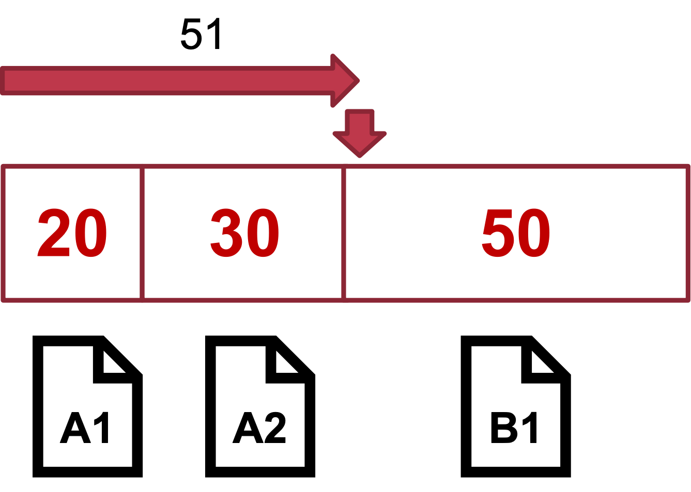
- 份额与优先级的异同：
- 份额影响任务对 CPU 的占用比例，不会有任务饿死
- 优先级影响任务对 CPU 的使用顺序，可能产生饿死
- 随机的利弊：
- 好处：简单
- 问题：不精确（伪随机），各个任务对 CPU 时间的占比会有误差
8. 步幅调度 (Stride Scheduling)
- Stride：步幅，任务一次执行增加的虚拟时间
- 是一个足够大的整数，可以设为所有 tickets 的最小公倍数
- 虚拟时间：物理时间除以任务对应的份额，大小表示 CPU 资源的相对使用情况
- Pass：累计执行的虚拟时间
- 规则：每次调度时，挑选 Pass 最小的任务
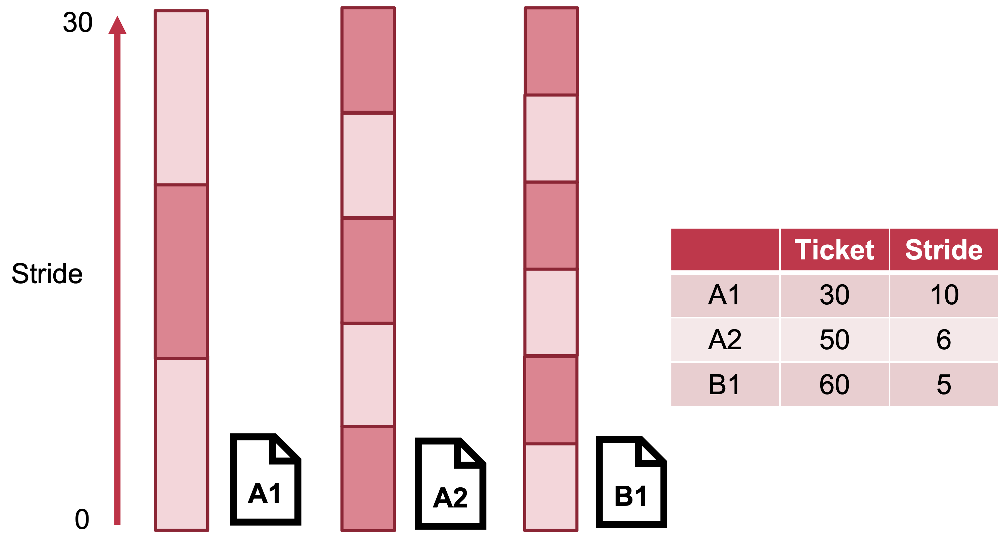
| Lottery Scheduling | Stride Scheduling | |
|---|---|---|
| 调度决策生成 | 随机 | 确定性计算 |
| 任务实际执行时间与预期的差距 | 大 | 小 |
多核调度策略 (Multicore Scheduling Policy)
-
全局运行队列：所有 CPU 共享同一个全局运行队列
- 问题：
- 多个 CPU 对全局调度器的访问产生锁竞争
- 同一个线程可能在不同 CPU 上切换：切换开销大（Cache 和 TLB）、缓存局部性差
- 问题：
-
本地运行队列：每个 CPU 核心维护本地运行队列
- 现被应用于 Linux、ChCore 等操作系统中
- 问题：负载不均衡
-
负载均衡：尽可能让每个 CPU 都同等忙碌
- 需要追踪 CPU 的负载情况
- 将任务从负载高的 CPU 迁移到负载低的 CPU
-
亲和性：尽量让一个进程调度到同一个 CPU 上运行，以发挥 CPU 中 Cache 的作用
- 通过操作系统暴露的任务亲和性接口，可以指定任务能够使用的 CPU 核心
Linux 调度器
Linux 为了满足不同需求，提供了多种调度策略。下面以 Linux 两种调度器为例，每种调度器都对应多个调度策略。
-
Linux Real-Time Scheduler：使用 Multi-level Queue 优先级调度
- 每个任务有自己的优先级、具体策略
- 具体策略可根据任务需求针对性选择
-
Linux Complete Fair Scheduler：通过调整任务每次执行的时间，达成公平共享的方式
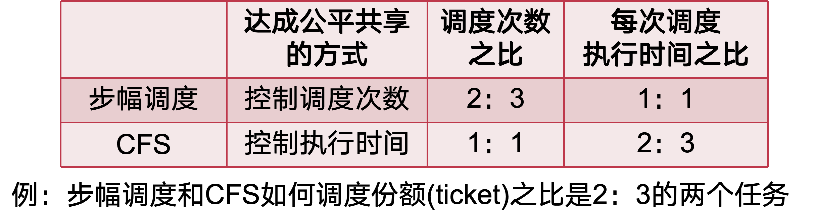
Lecture 12: 进程间通信
IPC 基础
-
IPC 的消息接口：
- 发送消息：
Send(message) - 接收消息：
Recv(message) - 远程方法调用：
RPC(req_message, resp_message)- 相当于在发送消息后，等待一个返回消息
- 远程方法调用的回复：
Reply(resp_message)
- 发送消息：
-
IPC 的两个阶段：
- 准备阶段：建立通信连接，即进程间的信道
- 通信阶段：
- 数据传递：以消息接口为例，通信数据抽象为消息，通常包含头部和数据内容
- 通信机制：在新的数据或消息到来时通知接收方
-
数据传递的两种方法：
- 基于共享内存的数据传递：OS 在通信过程中不干预数据传输，仅负责准备阶段的映射
- 无需切换到内核态即可完成 IPC（多核场景下）
- 完全由用户态控制，定制能力更强
- 可实现零内存拷贝（无需内核介入）
- 基于操作系统辅助的数据传递：OS 提供接口（系统调用），通过内核态内存来传递数据，无需在用户态建立共享内存
- 抽象更简单，用户态直接调用接口，使用更方便
- 安全性保证更强，发送者在消息被接收时通常无法修改消息
- 多方（多进程）通信时更灵活、更安全
- 基于共享内存的数据传递：OS 在通信过程中不干预数据传输，仅负责准备阶段的映射
-
两种通知机制：
- 基于轮询：轮询内存数据检查是否有消息到来
- 缺点：大量 CPU 计算资源的浪费
- 基于控制流转移：由内核控制进程的运行状态
- 优点：进程只有在条件满足的情况下才运行，避免 CPU 浪费
- 基于轮询：轮询内存数据检查是否有消息到来
-
IPC 控制流：同步和异步
- 同步 IPC：IPC 操作会阻塞进程直到操作完成
- 调用者继续运行时，返回结果已经 ready
- 异步 IPC：进程发起 IPC 操作后即可返回而不需要等待其完成
- 通过轮询或回调函数（需内核支持）来获取返回结果
- 同步 IPC：IPC 操作会阻塞进程直到操作完成
-
IPC 的超时机制：
- 应用可自行设置超时的阈值，但如何选择合适的阈值却很难
- 特殊的超时机制：阻塞、立即返回（要求被调用者处于可立即响应的状态）
-
IPC 的权限检查：
- 宏内核：通常基于权限检查的机制实现
- 如 Linux 中与文件的权限检查结合在一起
- 微内核：通常基于 Capability 安全检查机制实现
- Capability 保存在内核中，与进程绑定
- 进程发起 IPC 时，内核检查其是否拥有对应的 Capability
- 宏内核：通常基于权限检查的机制实现
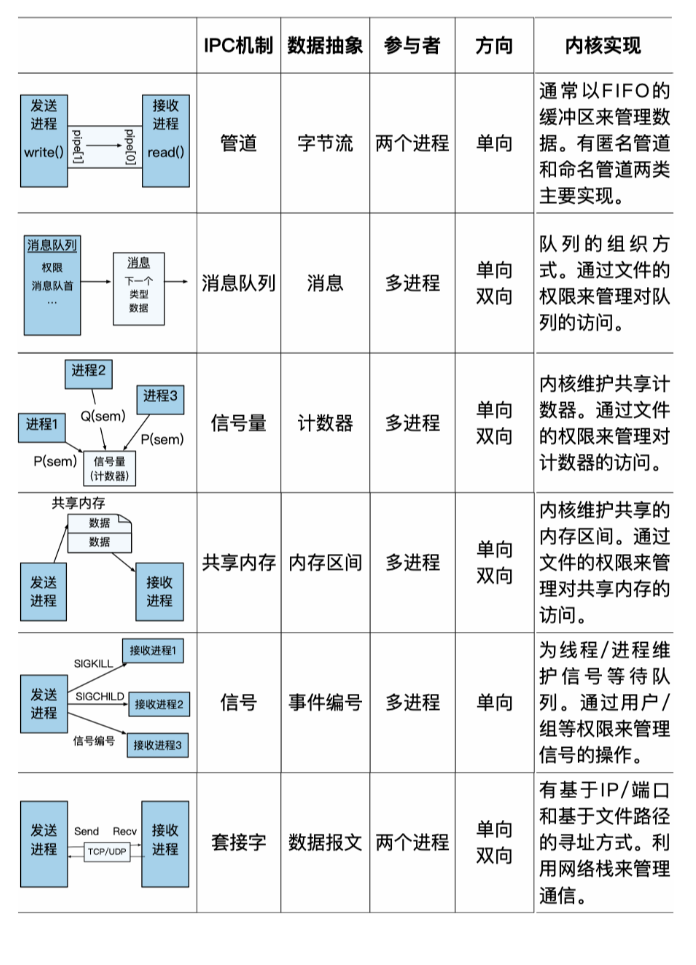
共享内存: 内存接口 IPC
共享内存为两个（或多个）进程在它们的虚拟地址空间中映射了同一段物理内存。
- 基础实现：
- 共享区域：共享区域容量、共享状态
1
2
3
4
5
6
7
8
9
10
11
12
13#define BUFFER_SIZE 10
// 消息抽象，即缓冲区中的元素
typedef struct {
struct msg_header header;
char data[0];
} item;
// 共享数据区域，容量为 10
item buffer[BUFFER_SIZE];
// 共享状态
volatile int buffer_write_cnt = 0;
volatile int buffer_read_cnt = 0;
volatile int empty_slot = BUFFER_SIZE;
volatile int filled_slot = 0;- 发送者(生产者)：在缓冲区上产生新的数据
1
2
3
4
5
6
7
8
9
10
11// Produce an item/msg
int send(item msg)
{
while (empty_slot == 0)
; // do nothing -- no free buffers
empty_slot--;
buffer[buffer_write_cnt] = msg;
buffer_write_cnt = (buffer_write_cnt + 1) % BUFFER_SIZE;
filled_slot++;
...
}- 接收者(消费者)：从缓冲区中获取数据
1
2
3
4
5
6
7
8
9
10item recv(void)
{
while (filled_slot == 0)
; // do nothing -- nothing to consume
filled_slot--; // remove an item from the buffer
item = buffer[buffer_read_cnt];
buffer_read_cnt = (buffer_read_cnt + 1) % BUFFER SIZE;
empty_slot++;
return item;
} - 共享内存的问题：
- 缺少通知机制：
- 若轮询检查，则导致 CPU 资源浪费
- 若周期性检查，则可能导致较长的等待时延
- 根本原因：共享内存的抽象过于底层；缺少 OS 更多支持
- TOCTTOU （Time-of-check to Time-of-use）问题：
- 当接收者直接用共享内存上的数据时，可能存在被发送者恶意篡改的情况
- 这可能导致 buffer overflow 等问题
- 缺少通知机制：
消息队列: 消息接口 IPC
-
消息队列：一种消息传递机制，属于间接通信
- 发送和接收的接口是内核提供的
- 信箱是内核中维护的消息队列结构体
- 有缓存，没有超时机制，支持异步通信（非阻塞）
- 支持多个发送者和接收者同时存在
-
消息队列的结构：在内核中的表示是队列，以链表的方式组织消息
- 任何有权限的进程都可以访问队列（写入或者读取）
- 消息的格式：类型（整型）+ 数据，允许按照类型进行消息查询
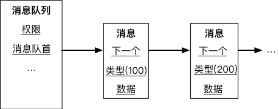
- 基本操作：
msgget：获取已有消息队列的连接，或创建一个新的消息队列msgctl：控制和管理消息队列，如修改消息队列的权限信息或删除该消息队列msgsnd：向消息队列发送消息msgrcv：从消息队列接收消息
轻量级远程方法调用 (LRPC)
-
核心思想：
- 传统思路：将需要处理的数据发送到另一个进程处理，这使得控制流切换和数据传输成为主要瓶颈
- LRPC 的思路：将另一个进程处理数据的代码拉到当前进程，以避免控制流切换和数据传输，从而优化 IPC 性能
-
控制流转换：
- 问题：需要下陷到内核，内核调度会导致不确定时延
- 即 Client 和 Server 之间可能会执行多个不相关进程
- 解决方法：将 Client 运行在 Server 的上下文
- 只切换地址空间、权限表等状态，不做调度和线程切换
- 问题：需要下陷到内核，内核调度会导致不确定时延
-
数据传输：
- 问题：经过内核的传输经历两次拷贝，即 Client → 内核 → Server
- 数据拷贝很慢（内存指令），并且不可扩展（数据量增大，时延增大）
- 解决方法：共享参数栈和寄存器
- 参数栈 (A-stack)：系统内核为每一对 LRPC 连接预先分配好一个 A-stack
- A-stack 被同时映射在 Client 进程和 Server 进程地址空间
- Client 进程只需要将参数准备到 A-stack 即可，不需要内核额外拷贝
- 共享寄存器：直接使用当前的通用寄存器，类似函数调用中用寄存器传递参数
- 参数栈 (A-stack)：系统内核为每一对 LRPC 连接预先分配好一个 A-stack
- 问题：经过内核的传输经历两次拷贝，即 Client → 内核 → Server
-
通信连接建立：
- Server 进程通过内核注册一个服务描述符，对应 Server 进程内部的一个处理函数
- 内核为服务描述符预先分配好参数栈及连接记录，连接记录用于从 Server 进程处返回（类似栈）
- 内核返回给 Clinet 一个绑定对象，作为成功建立连接的标志
- 后续 Client 通过绑定对象发起通信
-
通信过程：
- 内核验证绑定对象的正确性，并找到正确的服务描述符
- 内核验证参数栈和连接记录
- 检查是否有并发调用 (可能导致 A-stack 等异常)
- 将 Client 的返回地址和栈指针放到连接记录中
- 将连接记录放到线程控制结构体中的栈上 (支持嵌套 LRPC 调用)
- 找到 Server 进程的 E-stack (执行代码所使用的栈)
- 将当前线程的栈指针设置为 Server 进程的运行栈地址
- 将地址空间切换到 Server 进程中
- 执行 Server 地址空间中的处理函数
Binder IPC
- Binder IPC：兼具 IPC 数据传输的高性能与高安全
- 框架层 Binder 服务框架：发现服务，接口封装
- 内核层 Binder 驱动：提供内核层 IPC 能力
- 数据传输：通过内存映射减少 IPC 数据拷贝
- 内核发送/接收缓冲区、接收端缓冲区映射到同一块物理内存
- 发送端一次数据拷贝，接受端零次数据拷贝
- 数据序列化：内核辅助完成特殊对象传输
- 问题：复杂数据结构无法直接跨进程传输，如嵌套数据结构、指针、文件描述符等
- 解决方法：内核使用偏移数据定位特殊对象位置，并帮助接收端进程重构特殊对象
- 线程池模型：内核动态创建服务线程
- 问题：一个 IPC Server 可能处理大量 Client 请求
- 少量服务线程 -> 无法应对高负载任务
- 大量服务线程 -> 低负载时浪费资源
- 解决方法：内核默认从服务线程池挑选处理线程，服务线程不足自动创建
- 问题：一个 IPC Server 可能处理大量 Client 请求
Lecture 13: 同步原语
并发带来的同步问题
-
竞争条件 (Race Condition)：
- 当 2 个或以上线程同时对共享的数据进行操作，其中至少有一个写操作
- 该共享数据最后的结果依赖于这些线程特定的执行顺序
-
临界区 (Critical Section)：任意时刻，有且只有一个线程可以进入临界区执行
-
实现临界区抽象的三个要求：
- 互斥访问：在同一时刻，有且仅有一个线程可以进入临界区
- 有限等待：当一个线程申请进入临界区之后，必须在有限的时间内获得许可进入临界区而不能无限等待
- 空闲让进：当没有线程在临界区中时，必须在申请进入临界区的线程中选择一个进入临界区，保证执行临界区的进展
四种同步原语
- 同步原语 (Synchronization Primitives)：一个平台（如操作系统）提供的用于帮助开发者实现线程之间同步的软件工具
- 在有限的共享资源上正确的协同工作
互斥锁
- 互斥锁的作用：保证对共享资源的互斥访问
- 互斥锁接口：
Lock(lock)：尝试拿到锁lock- 若当前没有其他线程拿着
lock，则拿到lock，并继续往下执行 - 若
lock被其他线程拿着，则不断循环等待放锁（busy loop）
- 若当前没有其他线程拿着
Unlock(lock)：释放锁
- 场景举例：
- 解决多生产者消费者问题：
1
2
3
4
5
6
7
8
9while (prodCnt - consCnt == BUFFER_SIZE)
; /* do nothing -- no free buffers */
// 申请进入临界区
lock(&buffer_lock);
// 临界区
buffer[prodCnt % BUFFER_SIZE] = item;
prodCnt = prodCnt + 1;
// 通知离开临界区
unlock(&buffer_lock);- 解决多线程计数问题：
1
2
3
4
5
6
7
8
9unsigned long a = 0;
void *routine(void *arg) {
for (int i = 0; i < 1000000000; i++) {
pthread_mutex_lock(&global_lock);
a++;
pthread_mutex_unlock(&global_lock);
}
return NULL;
}
条件变量
- 条件变量的作用：提供线程的睡眠与唤醒机制
- 避免无意义的等待，让 OS 调度器调度其他任务执行
- 条件变量接口：
- 等待：
void cond_wait(struct cond *cond, struct lock *mutex);- 放入条件变量的等待队列
- 阻塞自己同时释放锁，即调度器可以调度到其他线程
- 被唤醒后重新获取锁
- 等待需要在临界区中
- 唤醒：
void cond_signal(struct cond *cond);- 检查等待队列
- 如果有等待者则移出等待队列并唤醒
- 唤醒也需要在临界区中
- 等待：
- 使用示例：多生产者消费者问题
- 等待空位：
1
2
3
4
5
6/* Wait empty slot */
lock(empty_cnt_lock);
while (empty_slot == 0)
cond_wait(empty_cond,empty_cnt_lock);
empty_slot--;
unlock(empty_cnt_lock);- 生产空位：
1
2
3
4
5/* Add empty slot */
lock(empty_cnt_lock);
empty_slot++;
cond_signal(empty_cond);
unlock(empty_cnt_lock);
信号量
读写锁
死锁
参考资料
本文参考上海交通大学并行与分布式系统研究所（IPADS）操作系统课程 CS3601 华志超老师的 PPT 课件整理。
部分图片来源于上海交通大学程序语言与编译原理课程 CS2612 曹钦翔老师的讲义。